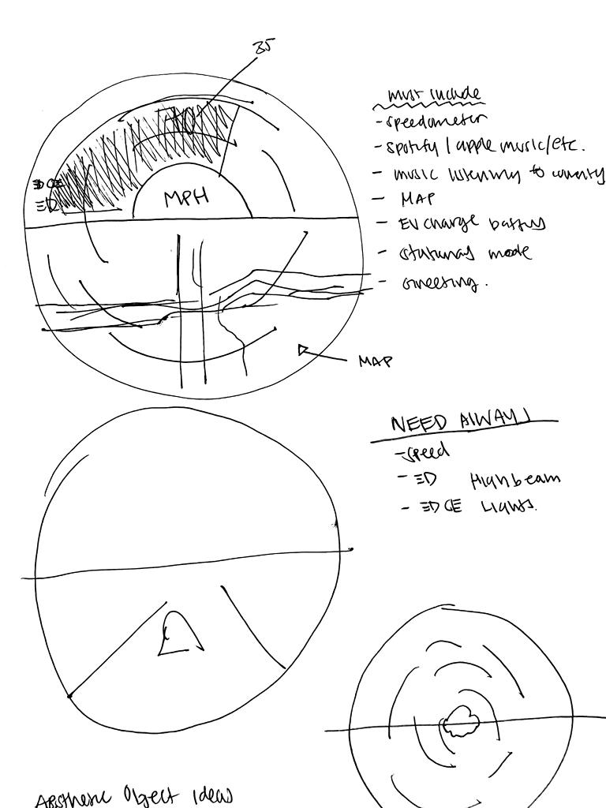
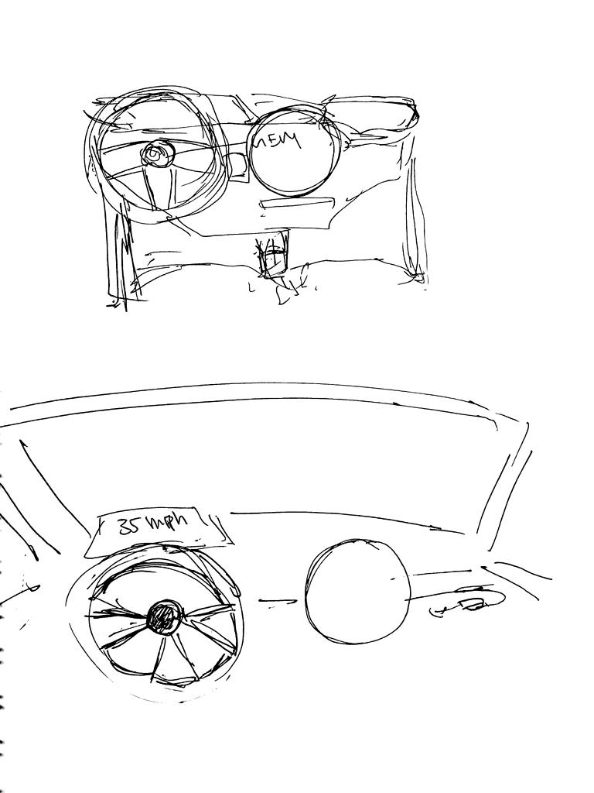
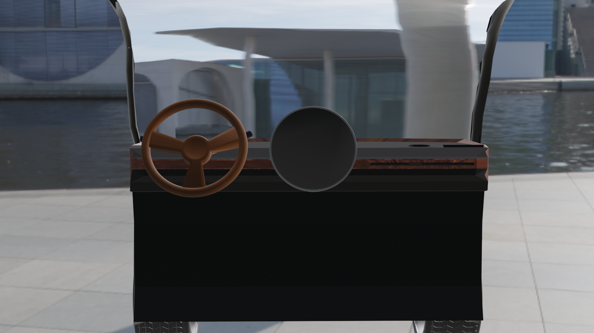
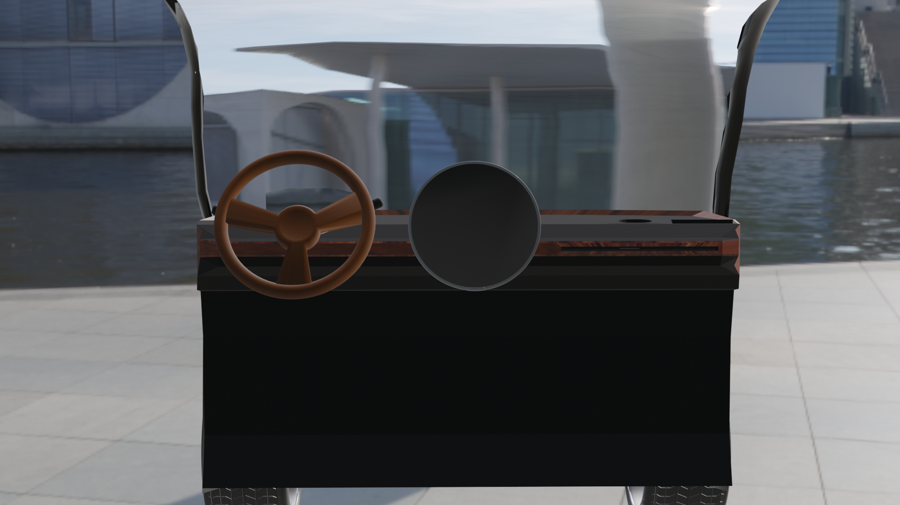

Sketches
I decided to choose the GEM Car as my project in the very beginning due to the fact that, the GEM Car had a lot of room for improvement. This provided a lot of windows for me to open and a lot of creative liberty in the designs.
Going through the process of designing the space of the car, I realized that to include a circular interface, which was the prefered choice of design for the interactable space due to it being slightly more difficult to design as well as more unique, the cars current capabilities were not the best choice of design. I understand that this assignment is not necessarily an industrial design project but with that included, I wanted to design a space that would fit the interactable design the best.
I began drawing sketches first with what I would want the interactive space to look like which is shown in the sketches below. What is shown is not the final result as of right now but rather a sketch of what is possibly part of the final design.
With the circular model out of the way, It was time to begin designing the space and seeing how much would best fit the circular design. I realize with the current design of GEM, there was a cup holder as well as some pocket space in the front of the car which seemed brilliant however innacessible if its behind a circular monitor or the chance of hitting the monitor was higher. Due to that, it was time to think of what I can put behind or where to put the space that was normally above elsewhere. I also realized, that I wanted to also include a HUD interface. This was due to the fact that with HUD interfaces, they are not as distracting and only show what is necessary on the screen without too much imagery. I decided that this would be the best option to include which was what I wanted to include in my design as well.

I then knew I needed to think bigger as well.
I began planning also how the bottom of the car would be and how it would look altogether. I then decided to bring back some of the tray holders into the design as well as deciding as of now, to place the HUD interface on the windshield.
After some iterations, this is where the car dashboard then was next.
This was the beginning stage of what I would add next to the car. I had a vision for the car but I had to eliminate the idea that it had to look exactly like the current GEM Car. With that I went into my next iterations.
I began to draw out more ideas on how it could look like and realized that with a simply interface with a large circular piece with buttons, I could have the vehicle I was looking for.
I started finalizing the car then and there. I added shaders, changed up the look of the car dashboard and also implemented more designs to the actual interactable dashboard. I made a more sleek and intune design for the dashboard that allowed space to carry items in the car while also showing space to focus on driving around. I made the screen a glass style texture while adding more metallic texture to the outside of the vehicle. I added some more textures to the interior by making it look more matted while including a wooden bezel to the interior to match the interface.
 
